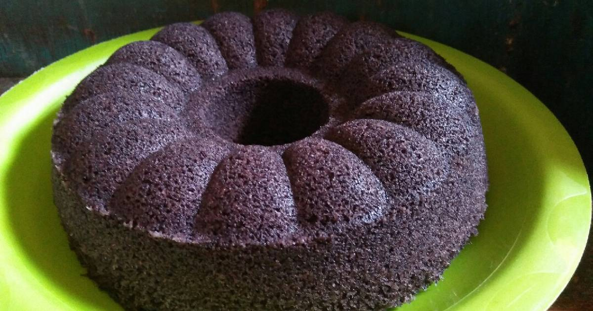

Kue Bolu Ketan Hitam

Bolu ketan hitam merupakan kue bolu dengan campuran tepung ketan hitam ini rasanya lembut dan manis. Cocok jadi camilan saat ngopi. Ketan hitam merupakan bahan pangan yang sering diolah sebagai bubur, kue, dan puding. Di balik rasanya yang legit, ketan hitam ternyata memiliki banyak manfaat bagi kesehatan, mulai dari menjaga kesehatan pencernaan hingga mencegah penyakit jantung dan antikanker. Kue Bolu ketan hitam di Toko Kue Pelangi ini bisa di dapatkan dengan harga Rp50.000-70.000 sesuai dengan ukuran kue yang di beli atau di pesan. Untuk informasi lebih lanjut bisa menghubungi kami melalui sosial media yang ada pada menu kontak kami.